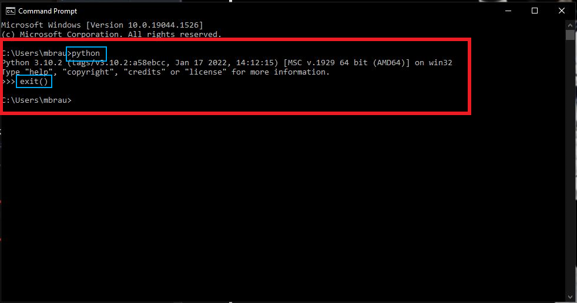
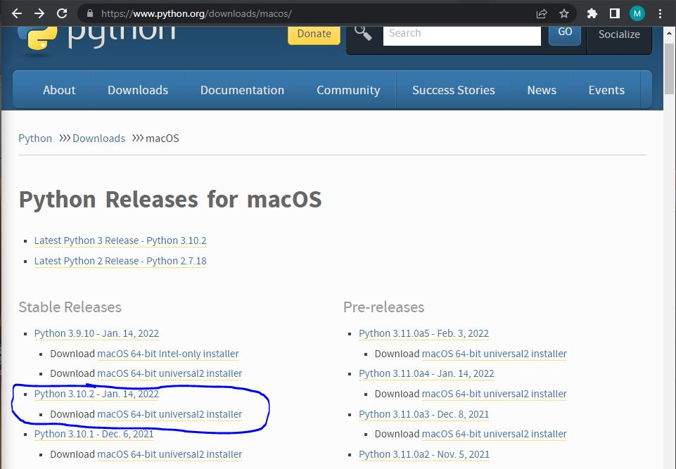

Instructions
Downloading Python:
The first step to running Winbology is to download python on your local machine.
To do so, follow the steps outlined below:
Windows:
1. Open command prompt through the Windows Search function on your taskbar:

2. Type the command "python", press enter, and one of two scenarios will occur:
a. Python is already installed and the following message will appear. Type "exit()" and press enter:

b. The Microsoft store will appear and prompt you to download Python. Select download, once complete, repeat step two and the screenshot above should appear.
Below is the prompt from the Microsoft Store:

3. Once Python is successfully installed, complete the following:
a. Type "cd Downloads/Winbology" to navigate to the correct file path
b. Type "pip install pillow" to install the correct libraries
c. Type "python WinbologyAlpha.py" to launch Winbology
If completed properly, the following GUI should appear:

NOTE: If you close the GUI, it can be reopened by typing "python WinbologyAlpha.py" again.
If the command prompt is closed however, subsections A and C of Step Three must be executed again to reopen the GUI.
MAC OS (Limited Screenshots because Motch and Brain A'int Got MAC):
1. Visit Python.org and download Python: Python Website

2. Open the installer and follow the steps.
3. Once installed, use the spotlight function and type "terminal"
4. Once the terminal is open, do the following:
a. Type "cd /home/YOUR ACCOUNT NAME/Downloads/Winbology" to navigate to the correct file path
b. Type "pip install pillow" to install the correct libraries
c. Type "python WinbologyAlpha.py" to launch Winbology
If the terminal is closed however, subsections A and C of Step Three must be executed again to reopen the GUI.
If completed properly, the following GUI should appear: